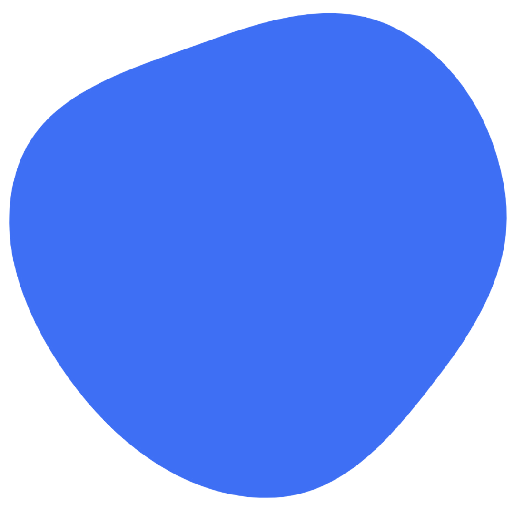

Hi!
I Am Valta03
Script Developer

Tentang Saya (ID):
Saya adalah seorang developer script bug WhatsApp yang berfokus pada pengembangan dan eksploitasi sistem WhatsApp dan Telegram. Saya juga seorang spesialis keamanan dalam pembuatan serta pelindungan script WhatsApp — baik untuk sistem berbasis Telegram maupun langsung via WhatsApp.
Tentang Saya (US):
About Me:
I am a WhatsApp bug script developer focused on system exploitation and security, including creating and securing WA bots integrated with Telegram or direct WA use.